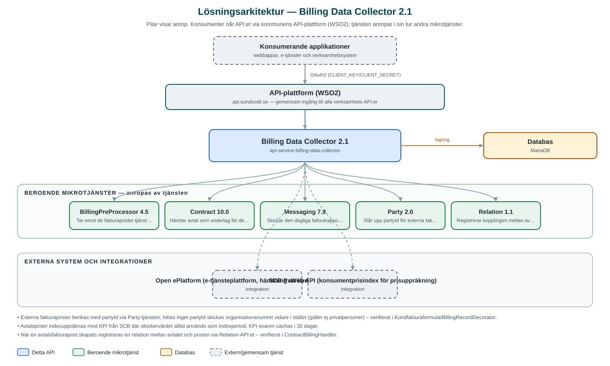

Billing Data Collector
Samlar in faktureringsunderlag från e-tjänsteformulär och avtal, omvandlar dem till fakturaposter och skickar dem vidare till Billing Preprocessor.
Om API:et
Billing Data Collector automatiserar insamlingen av faktureringsunderlag som annars skulle registreras manuellt. Tjänsten hämtar inskickade kundfakturaformulär från kommunens e-tjänsteplattform (Open ePlatform) och omvandlar dem till fakturaposter som skickas till Billing Preprocessor för vidare hantering mot ekonomisystemet.
Tjänsten sköter också schemalagd avtalsfakturering: avtal hämtas från Contract-tjänsten, priser räknas upp med konsumentprisindex (KPI) från SCB, och färdiga fakturaposter skapas enligt varje avtals faktureringsintervall. När en post skapats registreras en koppling mellan avtalet och fakturaposten via Relation-tjänsten.
Underlag som inte kan behandlas hamnar i en falloutlista som kan granskas och triggas om via API:et, och en daglig e-postrapport skickas till konfigurerade mottagare. Faktureringen kan även triggas manuellt per ärende eller för ett datumintervall.
Det här gör API:et
- Insamling från e-tjänstformulär – Hämtar inskickade kundfakturaformulär från Open ePlatform och omvandlar dem till fakturaposter, schemalagt varje natt eller manuellt per ärende.
- Schemalagd avtalsfakturering – Skapar fakturaposter från avtal enligt deras faktureringsintervall, med priser uppräknade med konsumentprisindex från SCB.
- Vidarebefordran till Billing Preprocessor – Färdiga fakturaposter skickas till Billing Preprocessor som tar dem vidare till ekonomisystemet Raindance.
- Fallouthantering – Underlag som inte kan behandlas sparas som fallout, kan triggas om via API:et och rapporteras dagligen via e-post.
- Avtalshändelser – Tar emot händelser om skapade, uppdaterade, borttagna och avslutade avtal och uppdaterar den schemalagda faktureringen därefter.
- KPI-uppslag – Exponerar konsumentprisindex från SCB via ett eget API-anrop, med långtidscachning av svaren.
API-dokumentation
API:ets samtliga resurser, parametrar och datamodeller finns beskrivna i en OpenAPI-specifikation som är hämtad ur källkodsförrådet. Den kan utforskas interaktivt i Swagger UI eller laddas ner som YAML. Programvaruförteckningen (SBOM) listar tjänstens samtliga tredjepartskomponenter med version och licens.
Teknisk dokumentation
Nedan beskrivs hur tjänsten är uppbyggd, vilka andra tjänster den anropar och vad som krävs för att driftsätta den. Informationen är härledd ur källkoden och dess konfiguration på GitHub.
Arkitektur

API:et är en mikrotjänst (Java 25, Spring Boot via kommunens gemensamma tjänsteplattform dept44 (8.0.8), byggd med Maven). Konsumenter når tjänsten via kommunens gemensamma API-plattform (WSO2) på api.sundsvall.se – tjänsten anropas aldrig direkt. Tjänsten anropar i sin tur andra mikrotjänster i kommunens tjänstelandskap. Lagring: MariaDB med Flyway-migrationer; lagrar historik, falloutposter, schemalagd fakturering och motpartsmappning. Övriga integrationer som förekommer i koden: Open ePlatform (e-tjänsteplattform, hämtning av kundfakturaformulär), SCB PxWeb API (konsumentprisindex för prisuppräkning).
Teknikstack
- Språk: Java 25
- Ramverk: Spring Boot via kommunens gemensamma tjänsteplattform dept44 (8.0.8), byggd med Maven
- Databas: MariaDB med Flyway-migrationer; lagrar historik, falloutposter, schemalagd fakturering och motpartsmappning
- Övrigt: Schemalagda jobb med Shedlock-låsning, Caffeine-cache för partyId och KPI-data, Xsoup för tolkning av formulärdata
Beroenden till andra mikrotjänster
Tjänsten anropar följande mikrotjänster. Versionerna är hämtade ur källkodens integrationsklienter.
| Tjänst | Version | Användning |
|---|---|---|
| BillingPreProcessor | 4.5 | Tar emot de fakturaposter tjänsten skapar. |
| Contract | 10.0 | Hämtar avtal som underlag för den schemalagda avtalsfaktureringen. |
| Messaging | 7.9 | Skickar den dagliga falloutrapporten via e-post. |
| Party | 2.0 | Slår upp partyId för externa fakturamottagare. |
| Relation | 1.1 | Registrerar kopplingen mellan avtal och skapad fakturapost. |
Programvaruförteckning
Tjänsten bygger på 311 tredjepartskomponenter fördelade på 14 olika licenser. Till skillnad från tabellen ovan, som listar andra mikrotjänster, avses här de programbibliotek som ingår i bygget. Se programvaruförteckningen för hela listan.
Konfiguration och driftsättning
- application.yml med URL och OAuth2-klientuppgifter för Billing Preprocessor, Contract, Party och Relation
- Anslutning och certifikat för Open ePlatform samt bas-URL för SCB:s PxWeb-API
- MariaDB-anslutning; databasschemat versionshanteras med Flyway
- Cron-scheman för jobben: OpenE-hämtning (03:00), falloutrapport (04:00), avtalsfakturering (varannan timme) och certifikatkontroll (06:00)
- Mottagare och mall för falloutrapportens e-post
Noterbart ur källkoden
- Externa fakturaposter berikas med partyId via Party-tjänsten; hittas inget partyId skickas organisationsnumret vidare i stället (gäller ej privatpersoner) – verifierat i KundfakturaformularBillingRecordDecorator.
- Avtalspriser indexuppräknas med KPI från SCB där oktobervärdet alltid används som indexperiod; KPI-svaren cachas i 30 dagar.
- När en avtalsfakturapost skapats registreras en relation mellan avtalet och posten via Relation-API:et – verifierat i ContractBillingHandler.
- Ett dagligt certifikatjobb kontrollerar OpenE-certifikatets giltighet och varnar 15 dagar före utgång.
- README beskriver bara tjänsten översiktligt ("schedules and performs billings") – funktionaliteten ovan är härledd ur koden.
Källkod
Källkoden är öppen och finns hos Sundsvalls kommun på GitHub. I källkodsförrådet finns även instruktioner för att klona, konfigurera och starta tjänsten i egen miljö.